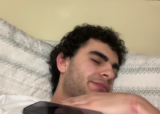

Maicol Thuram
Giornalista • Panel “Libertà di stampa”
Intrepido, stravagante, realista, teocratico. Un vero toccasana per la libertà. De Gea in porta.
In questa pagina saranno raccolte le foto, le mini-bio e i panel in cui intervengono gli ospiti del festival.
Giornalista • Panel “Libertà di stampa”
Intrepido, stravagante, realista, teocratico. Un vero toccasana per la libertà. De Gea in porta.
Attivista • Panel “Sorveglianza digitale”
Divertente, comico, cubista, un tocco di creatività: ecco che avete ottenuto Damian, grande attivista in Amnesty.
Attivista • Panel “Sicurezza informatica”
Grandissimo cuoco di notevole calibro. Spiccata tendenza alla lussuria. Sciocco.
Attivista • Panel “Lopinho”
Veterano di THE FINALS. Amante dell'integrazione, della bresaola e dei barbieri egiziani. Da non perdere.
La lista completa degli ospiti verrà aggiornata progressivamente man mano che vengono confermati.